Como me tornei mentora
a virada veio quando eu entendi que a minha mensagem valia mais que os meus números
Com apenas 200 seguidores, eu comecei a receber textões no direct de mulheres me pedindo para analisar o projeto delas.
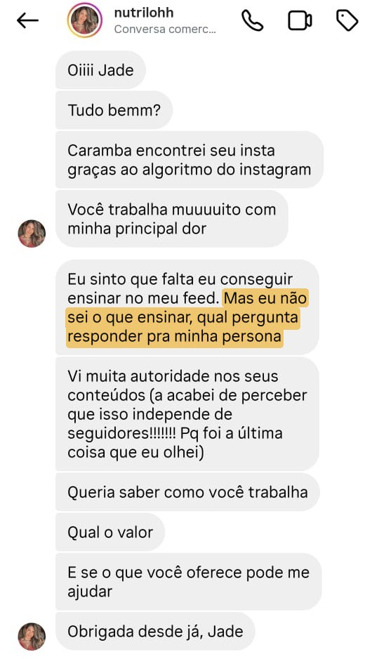

Uma jornada ao meu lado paratransformar o que você sabe emprodutos autorais, uma mensagemúnica e um setor de vendasque não depende das métricasdas redes sociais.
Quero entrar no programaHoje eu tenho um projeto no digital validado, que posso chamar de negócio, mas nem sempre foi assim…
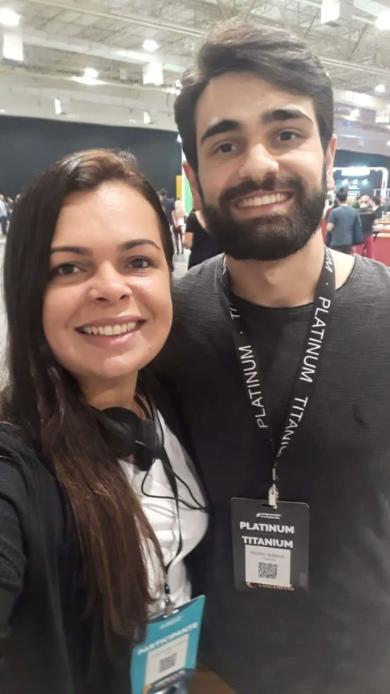
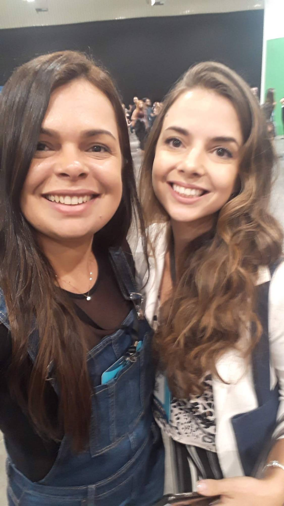
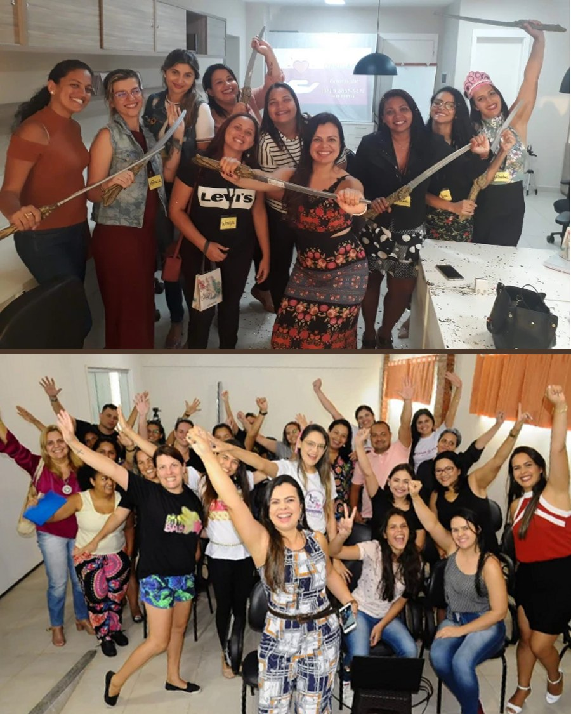
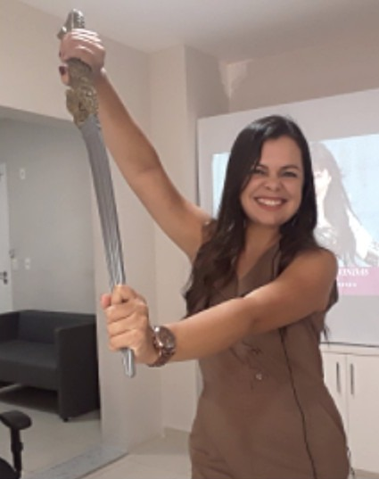
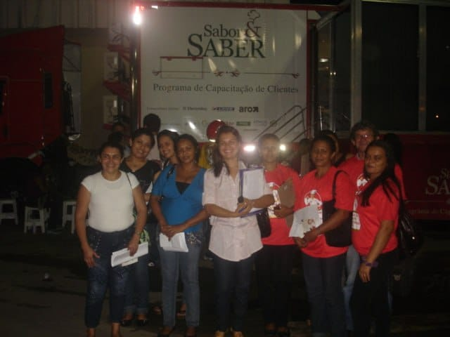
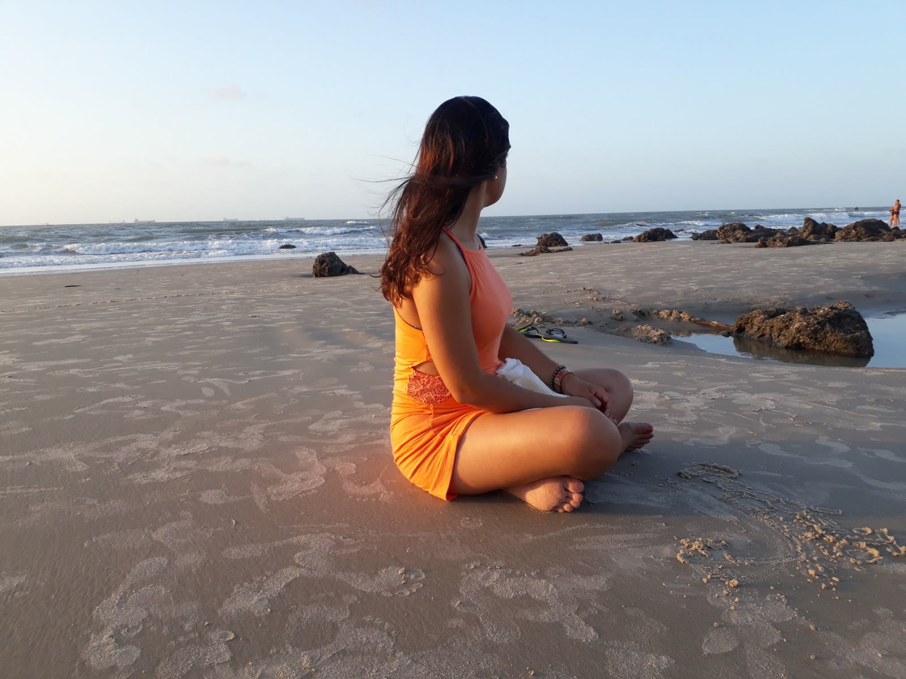
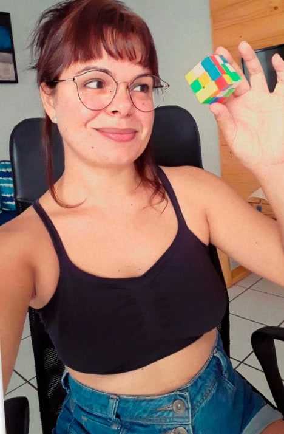
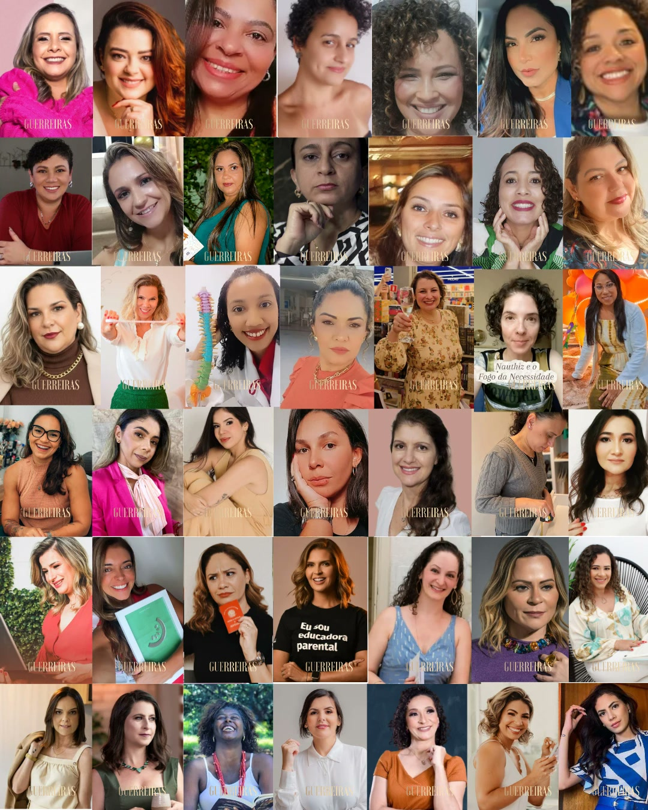
Com apenas 200 seguidores, eu comecei a receber textões no direct de mulheres me pedindo para analisar o projeto delas.

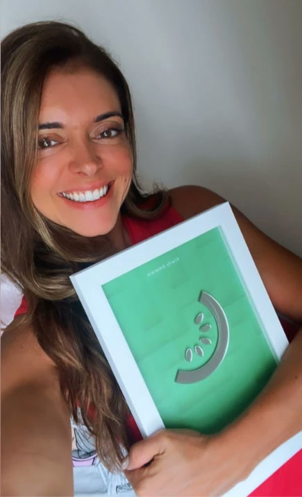

Os vídeos delas estão no meu perfil do Instagram, no carrossel fixado.
Uma observação honesta: esses resultados são de alunas que aplicaram as etapas. Eu entrego o caminho, as ferramentas e a mentoria; o resultado de cada uma depende da sua ação e do seu momento.
São 2 trilhas, com 6 etapas cada uma. Primeiro você constrói o projeto, na Trilha Azul. Depois, o setor de vendas, na Trilha Vermelha.
Você descobre de onde fala e para quem fala. Sai com a sua fatia de mercado e o seu posicionamento claro.
A sua trajetória vira um método com o seu nome, e dele nascem os seus produtos.
Você define sobre o que falar e como, e arruma bio, destaques e fixados para atrair a cliente certa.
Você junta os seus produtos numa oferta que vende e monta o caminho para a cliente chegar até ela.
Você leva gente para o funil, com anúncio e conteúdo, e organiza a conversa que transforma interesse em venda.
Você recebe bem quem comprou e entrega um produto que gera resultado e depoimento.
Uma metodologia distribuída em produtos autorais, conteúdo que conecta e um setor de vendas funcionando, sem consumir 100% do seu tempo.
O que transforma não é ter acesso exclusivo à mentora. É uma metodologia organizada, validada, com um passo a passo, somada à sua ação.
As duas trilhas mostram exatamente o que fazer em cada etapa. Você não paga para eu repetir o que já está gravado.
Em cada etapa, você usa ferramentas interativas e prompts que organizam as suas ideias. Se travar, tem o meu suporte no WhatsApp, no Jade Responde, para você não se perder na jornada.
Por isso o programa dura um ano: você entra no ciclo que fizer sentido para você, acompanha no seu ritmo e tem tempo para chegar aos seus resultados.
Neste programa, você recebe o mesmo caminho que eu desenhei e validei: primeiro organiza o seu projeto, depois constrói o setor de vendas.
Cada pilar tem uma função. Juntos, eles levam você do primeiro passo até o projeto vendendo.
Organiza o seu projeto: lugar de fala, posicionamento, método autoral, produtos, linha editorial e redes sociais. Gravada e atualizada.
Constrói o seu setor de vendas: oferta, funil, tráfego, processo comercial, onboarding e entrega. Gravada e atualizada.
Cada etapa das trilhas tem a sua ferramenta: você assiste ao módulo e já constrói aquela parte do seu projeto. Todas foram atualizadas com IA.
O aplicativo do meu primeiro método, para você planejar o seu conteúdo.
ferramenta da Trilha AzulUm Campo de Batalha por mês: uma imersão ao vivo comigo, num sábado, passando pelas 12 etapas. Você escolhe o mês e, a partir dali, tem 12 semanas para colocar o seu projeto no ar.
ciclo de 90 diasA sua mentora de bolso: um WhatsApp para as dúvidas do seu projeto, que eu respondo em dias e horários fixos.
Não é promessa de marketing: é o tempo que as minhas alunas levaram para colocar o projeto de pé. Todo mês tem um Campo de Batalha: uma imersão ao vivo comigo, num sábado, em que eu passo pelas 12 etapas, da primeira da Trilha Azul à última da Vermelha. Você escolhe o mês para entrar e, a partir dali, tem 12 semanas para colocar o seu projeto no ar.
Mesmo sem participar do desafio, o seu projeto está garantido, com as aulas gravadas e as ferramentas. O desafio é a forma de manter você em movimento, ao vivo comigo e em contato com outros projetos.
Ele começa no mês que você escolher.
Em todo Campo de Batalha tem um momento só para as dúvidas. É ali que você traz o que travou no seu projeto, e eu respondo ao vivo.
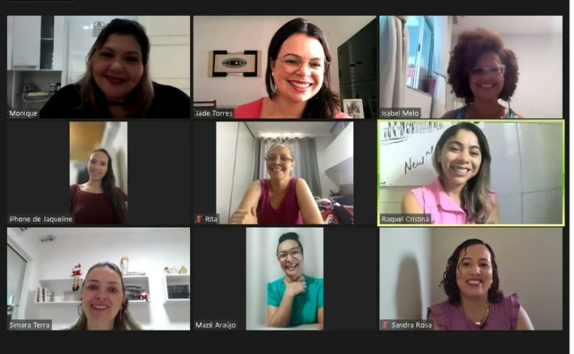
Um dos nossos encontros ao vivo.
Você fala com a minha equipe no WhatsApp, e a mensagem já vai pronta.
Quero fazer a minha aplicaçãoResponda algumas perguntas e a minha equipe fala com você no WhatsApp.
Mentora especialista em Branding Editorial e Metodologia Autoral.
Antes do digital, a Jade passou mais de 10 anos à frente da sua cozinha industrial, no ramo de alimentação. Chegou a 40 funcionários, 13 contratos em paralelo com construtoras de vários estados junto à Vale, R$ 2,5 milhões de faturamento no ano da ampliação do porto de Ponta da Madeira, no Maranhão, e mais de 30 mil refeições por mês saindo das suas unidades.
Em 2021, recomeçou do zero e se reinventou no digital. Em 2023, montou a primeira turma de mentoria para mentoras e construiu a Caverna das Guerreiras. Hoje tem um negócio com previsibilidade de vendas, que não depende do Instagram para faturar, e já acompanhou mais de 200 mulheres.
“Queimei os barcos no offline para construir a ponte no online.”
Um ano de acesso, a partir da sua entrada.
Não. O ao vivo acontece nos Campos de Batalha do Desafio 12 Semanas no Ar, em grupo, uma vez por mês. As dúvidas do dia a dia vão para o Jade Responde.
Tem Campo de Batalha uma vez por mês, então você escolhe o mês em que quer começar e, a partir dali, roda as suas 12 semanas. Os Campos ficam gravados, e um ciclo completo já basta para fechar o seu projeto.
É um WhatsApp para as dúvidas do seu projeto. Eu respondo em dias e horários fixos. Ele não é um espaço de desabafo: é a sua mentora de bolso para destravar a próxima etapa.
Não. A Trilha Azul começa do Lugar de Fala, o primeiro passo de todo projeto. Se você já tem parte do caminho feito, segue no seu ritmo até a Trilha Vermelha.
Não há contrato assinado. Ao entrar, você aceita os Termos do Programa, que explicam a duração, as regras do Jade Responde, o que não está incluído e o uso das gravações.